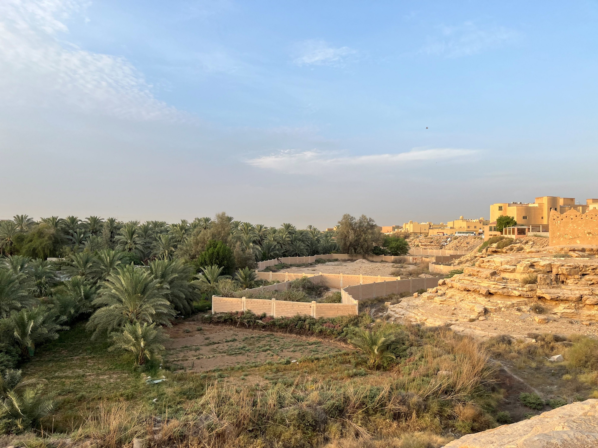
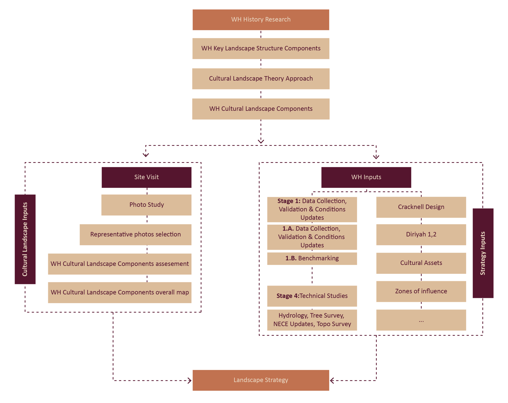
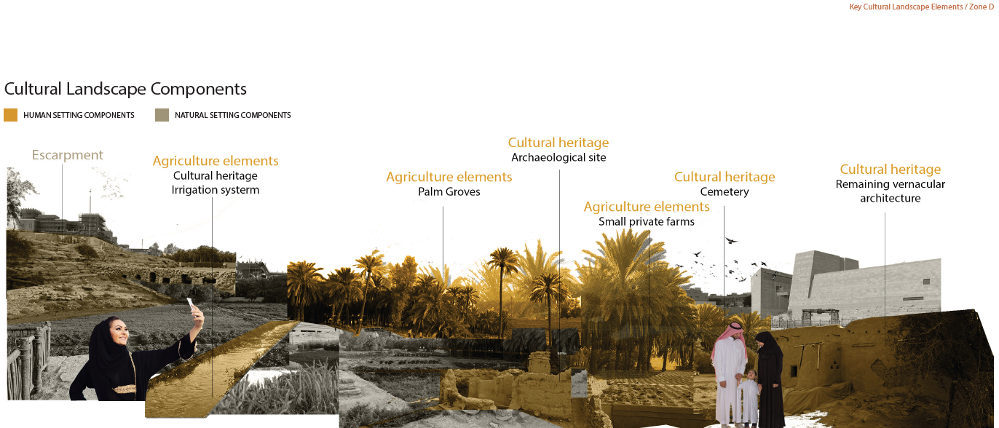
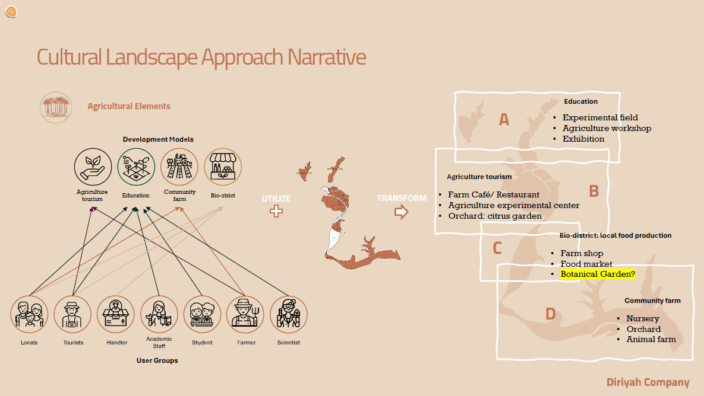
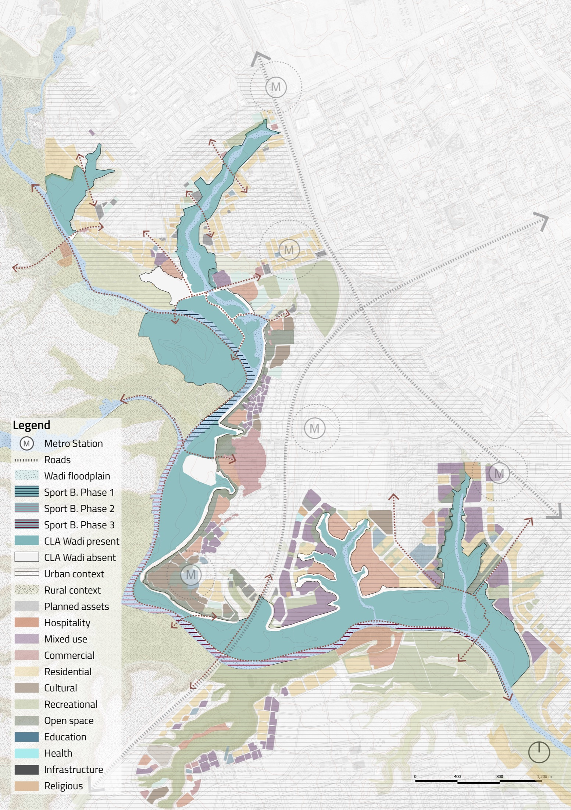
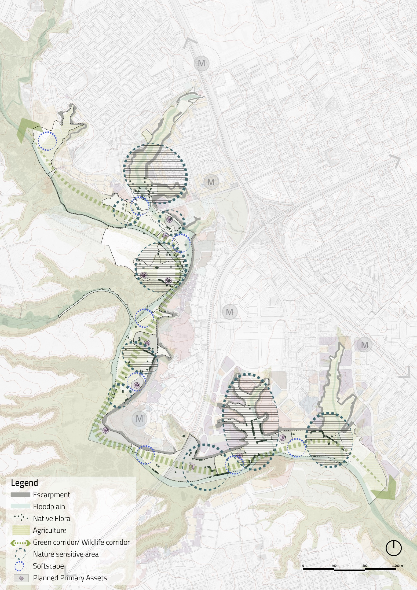
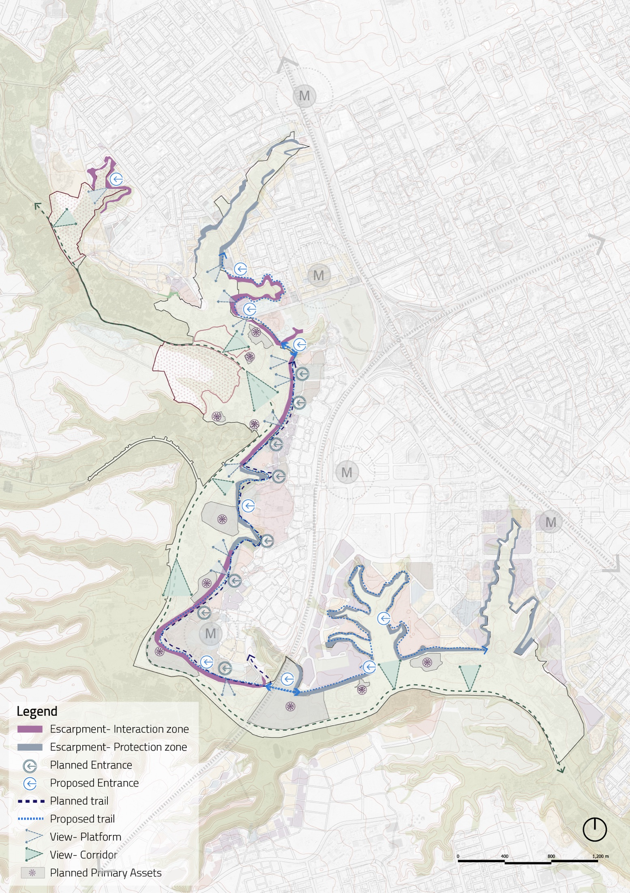
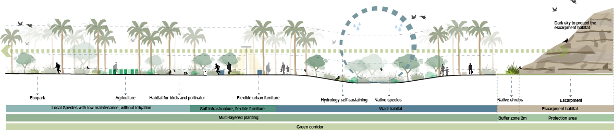
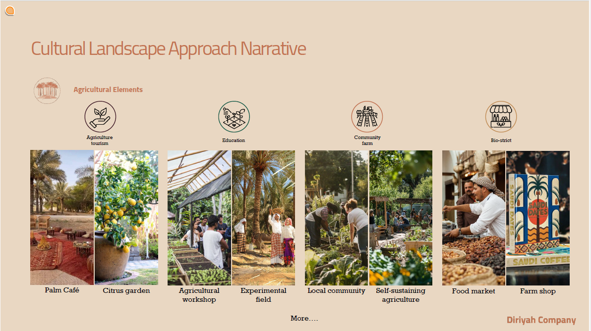

Professional work / Cultural landscape
Cultural Landscape Strategy
A landscape strategy for Wadi Hanifah, translating cultural landscape research into a spatial framework for heritage, agriculture, ecology, public access, and productive landscape programs.

Reading the wadi as both a cultural artifact and a living productive landscape.
The project organizes Wadi Hanifah through a cultural landscape strategy rather than a single object-based intervention. Existing palm farms, escarpment edges, native flora, water structures, access routes, and heritage fragments are treated as active design material.
The proposal connects landscape protection with public experience and local production. New programs are placed where they can strengthen the existing landscape logic: agricultural education, eco-farm loops, local food production, shaded trails, viewing platforms, and carefully managed edges between urban fabric and the wadi system.
A research-to-strategy workflow built from landscape inputs and development inputs.

Historical research, site visits, photographic studies, cultural component mapping, and stakeholder inputs are combined into a strategy framework for landscape transformation.
From cultural components to spatial planning priorities.

The wadi is interpreted through recurring landscape components: escarpment, palm farms, native vegetation, irrigation traces, heritage buildings, and settlement edges.

Development models are matched with user groups and landscape zones, turning the cultural reading into programs such as agriculture tourism, education, food markets, and community farming.
Three plan layers compare existing assets, ecological structure, and access strategy.

Existing land-use fragments, planned assets, palm farm areas, and wadi presence are mapped against the wider urban context.

Floodplain, escarpment, agriculture, native flora, nature-sensitive areas, and green corridors define the protection and landscape continuity structure.

Planned and proposed entrances, trails, view platforms, and view corridors are organized around protection zones and public interaction areas.
Eco-farm programs turn productive agriculture into public landscape infrastructure.

Productive landscape loop
Integrated agriculture is linked with food production, farm shop, cafe, restaurant, and local markets, making production visible within the visitor experience.
Ecological services
Organic waste composting, wastewater purification, soil fertilisation, and habitat layers support a self-sufficient landscape model.
Education and community use
Experimental fields, workshops, nurseries, orchards, and community farms create a public-facing cultural landscape rather than a sealed productive zone.
A section principle for combining habitat, agriculture, trail life, and escarpment protection.

The section arranges low-maintenance planting, agriculture, bird and pollinator habitat, flexible furniture, self-sustaining hydrology, native species, and protected escarpment vegetation into one continuous green corridor.
Reference programs connect agriculture, learning, tourism, and local exchange.

Reference atmospheres support the strategy: palm cafe, citrus garden, agricultural workshop, experimental field, local community farming, food market, and farm shop.